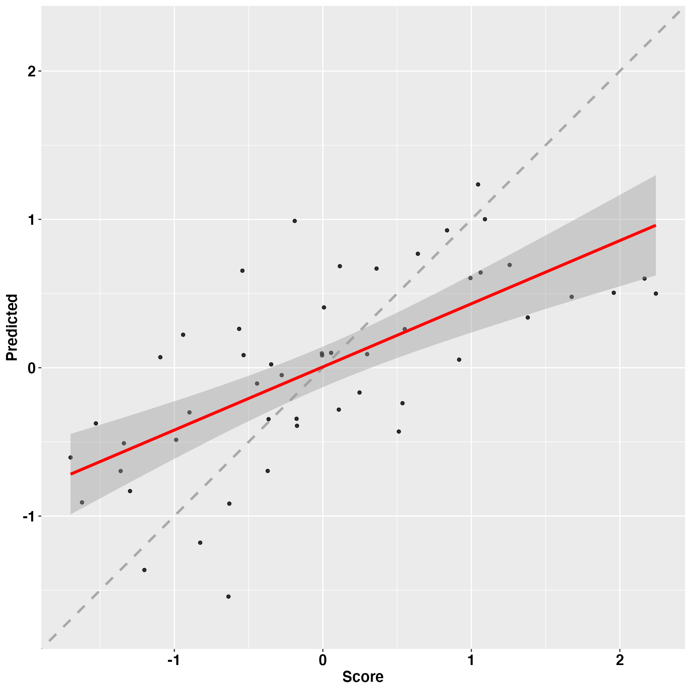
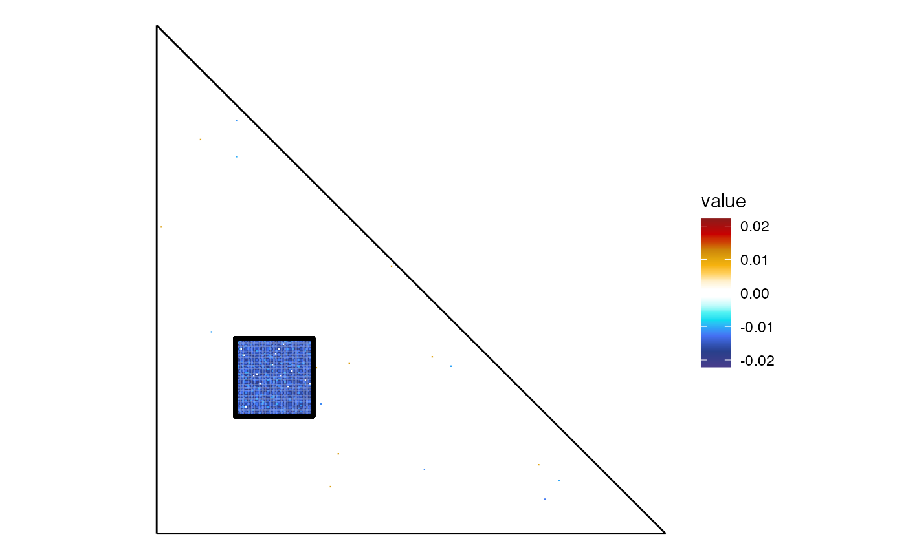

FCnet_overview_of_package
Elvio Blini
December 2020
FCnet_overview_of_package.RmdIntroduction
The analysis of (Functional Connectivity) neuroimaging data can be daunting due to the very high dimensionality of the features involved. In time, several approaches to the problem have been devised. FCnet allows one to easily implement a three steps procedure consisting of:
Feature reduction: the functional connectivity matrices are first summarized through data reduction techniques such as Principal Component Analysis or Independent Components Analysis.
Robust regression: the reduced matrix of Weights is then entered into a robust regression model (with either ridge or LASSO penalty). The model is crossvalidated internally by means of Leave-One-Out (nested) crossvalidation.
Back-projection: models’ coefficients can be back-projected onto the original space, in order to rank the most predictive edges of a matrix.
For useful references, see: Siegel et al., 2016; Salvalaggio et al., 2020; Calesella et al., 2020.
This vignette will provide an overview of FCnet main routines.
Setting up the simulation
We will need the following packages:
library("FCnet") #for the main analysis routines## Loading required package: glmnet## Loading required package: Matrix## Loaded glmnet 4.1-1## Loading required package: glmnetUtils##
## Attaching package: 'glmnetUtils'## The following objects are masked from 'package:glmnet':
##
## cv.glmnet, glmnet
library("ggplot2") #beautiful depictions
library("gridExtra") #arrange plots
library("future.apply") #for speed and parallel computing## Loading required package: futureIn order to use your own set of matrices, you should make sure that these are imported in R as a list of lists. You can use several approaches in order to do that. The easiest way is probably to use loadFC(), which comes with the package FCnet:
my_matrices= FCnet::loadFC()Matrices should be stored as .csv files in a folder, and with specific formatting requirements.
The FCnet package comes with a 324x324 matrix of functional connectivity data obtained from 37 participants. We use it, in this overview, as a starting point to simulate several FC matrices which will help to illustrate the main functions of FCnet.
data("MeanFC") #the object MeanFC is now available
set.seed(1)
N_subs= 50 #number of participants/matrices
subjs_variability= 0.2 #variability (sd) between matrices
#this function creates several matrices by adding gaussian noise
#with sd "variability" to a reference matrix
m_start= simulateMat(mat = MeanFC,
Nmat = N_subs,
mat_variability = subjs_variability)m_start is now a list of lists, the preferred format of FCnet, including several FC matrices putatively obtained from different individuals.
Now we perturb only one subset of these matrices (i.e. a network), in a very crude way, just to illustrate FCnet.
Specifically, we bias one network systematically, as a function of one behavioral score y (to be recovered in a subsequent step). In this scenario, a subset of edges will be injected with signal that is directly related to the behavioral score to be ultimately predicted: these edges will be correlated with the score y. To have a more realistic simulation, this bias will not be constant but rather modulated by a random factor such that different participants may present different degrees of this bias.
y= rnorm(N_subs, mean = 0, sd= 1) #the behavioral score
network1= 50:100 #network to perturb
network2= 200:250 #network to perturb
bias_multiplier= 0.6 #mean signal to inject (i.e. mean correlation with y)
bias_variability= 0.2 #variability - sd - around this mean signal
#this function biases a given network as a function
#of a behavioral score y
m_bias= biasMat(matrices = m_start,
y = y,
network1 = network1,
network2 = network2,
bias_multiplier = bias_multiplier,
bias_variability = bias_variability,
mat_variability = subjs_variability)We now have two sets of matrices: the starting set m_start, in which no signal has been added; the biased set m_bias, in which connections in a given subnetwork have been biased according to y. We will use the latter to test whether we can fit a predictive model and whether the most predictive edges fall within the subnetwork that we have perturbed.
The utility function plotFC gives a graphical depiction of a FC matrix. We can plot a representative participant:
#this adds a grid on the plot corresponding to the
#network which was perturbed
grid_net= list(geom_rect(aes(xmin= min(network1),
xmax= max(network1),
ymin= min(network2),
ymax= max(network2)),
size= 1.05, color= "black",
fill= "transparent"))
ps= plotFC(m_start[[which.max(y)]], #we plot one specific matrix
lim = c(-1, 1)) + ggtitle("Start") + grid_net
pb= plotFC(m_bias[[which.max(y)]],
lim = c(-1, 1)) + ggtitle("Bias") + grid_net
#arrange plots
grid.arrange(ps, pb)Indeed, we can plot the correlation map:
f_cor= function(lst, y){
n= length(lst)
rc= dim(lst[[1]])
ar1= array(unlist(lst), c(rc, n))
apply(ar1, c(1, 2), function(x)(cor(x, y)))
}
cor_bias= f_cor(m_bias, y) #warnings due to vectors being identical (e.g. diagonal)
plotFC(cor_bias) + ggtitle("Correlation map") + grid_netWe have indeed injected correlation between edges and the behavioral score in the highlighted region of the correlation matrix. The mean correlation is 0.6. We can also plot the variability between FC matrices, just to show that the only signal injected is correlation between edges and the behavioral score, not noise.
f_sd= function(lst){
n= length(lst)
rc= dim(lst[[1]])
ar1= array(unlist(lst), c(rc, n))
apply(ar1, c(1, 2), function(x)(sd(x)))
}
bias_sd= f_sd(m_bias)
plotFC(bias_sd, limit = c(0.15, 0.25)) + ggtitle("Variability") + grid_net
Features reduction
Once we have obtained all the simulated matrices, we can chain all the FCnet main functions in order to see whether models are predictive or not, and whether we can reconstruct the network that we have artificially biased.
We start with performing feature reduction through PCA. By default, reduce_featuresFC() performs Principal Component Analysis (PCA) and returns, in the Weights slot, the components that explain at least 95% of the variance in the matrices. Other available techniques include Independent Component Analysis (ICA). Being this a very crude simulation, with our main bias probably tapping on the first few components, we will only ask the function to retain 10 features. Note that signal is usually more distributed in the matrices, thus this is rather artificial; a better simulation would perturb random edges, but that would be less visually clear within the scope of this overview.
rf_bias= reduce_featuresFC(FCmatrices = m_bias,
Ncomp = 10) Modelling
We can run Leave-One-Out (nested cross-validated) robust regressions with one line:
r_bias= FCnetLOO(y = y,
x = rf_bias,
alpha= 0, #ridge regression
parallelLOO = F)
r_bias$R2## [1] 0.4358772It appears that this model is capable to explain about 43% of the variance from LOO observations.
A graphical depiction of the fit or coefficients can be obtained with plotFCnet():
plotFCnet(model = r_bias,
plot_labels = F) #avoid padding, otherwise useful## `geom_smooth()` using formula 'y ~ x'
plotFCnet(model = r_bias,
output = "coefficients") As can be seen from the second plot, perhaps the model is still overparametrized, and the first coefficient seems to drive this effect. This is certainly due to the crude assumptions of this simulation.
A far more compelling proof, however, would be back-projection. Ideally, relevant edges will be scattered all around the matrix for non-predictive models, but will be more centered on the network (or interaction between networks) that we perturbed for really informative ones.
Visualization and back-projection
We ensure that back-projected coefficients properly identify the network that we perturbed:
bp_bias= backprojectFCnet(coeffs = r_bias,
reduce_features_object = rf_bias,
threshold = length(network1)*length(network2))
plotFC(bp_bias) + grid_netIndeed, predictive edges appear to highlight the exact same network we perturbed as the most relevant one, on top of a few spurious edges.
Back-projection by default computes the linear contribution to the behavioral score for all edges through the estimated coefficients. We checked before individual coefficients with plotFCnet: the most predictive component was the first one (note that this is a very crude simulation after all!). We can back-project only the edges tapping on this first component:
bp_first= backprojectFCnet(coeffs = 1,
reduce_features_object = rf_bias,
threshold = length(network1)*length(network2))
plotFC(bp_first) + grid_net
Indeed, the first component mainly taps onto the network that we have biased. Edges have a negative loading on this feature, but they have a positive association with the behavioral score.
Testing significance: permutation test
Large R2 values may occur by chance or simply in light of the many predictors in the model - even though this problem is mitigated by using the LOO R2. In order to test whether this R2 is beyond chance, we can run a permutation test. Here, values of y are shuffled and then predicted. Ideally, the distribution of the models created in this way should cover - and inform about - the range of the null model.
Note that, in order to optimize computational resources, we only ask for 100 permutations (the default, but generally not enough) and, most importantly, we use parallel computing to optimize the procedure. When parallelLOO is TRUE, the outer cycles are run in parallel on multiple cores (if available) by using the package future.apply, which must be installed. In addition, plan(multisession or similar must be invoked in advance by the user.
plan(multisession) #prepare for parallel computing
perm_bias= permutateLOO(y = y,
x= rf_bias,
alpha = 0,
parallelLOO = T,
nperm = 100,
model_R2 = r_bias,
return_coeffs= T)
knitr::kable(perm_bias$Summary)| Model_R2 | Permutations | P_value | MeanR2 | SD_R2 | Upper_95 | Quantile_50 | Quantile_70 | Quantile_90 | Quantile_95 |
|---|---|---|---|---|---|---|---|---|---|
| 0.4358772 | 100 | 0 | 0.08124 | 0.0741047 | 0.2264851 | 0.0658447 | 0.1057252 | 0.1694082 | 0.2152632 |
The original model’s R2 is reported on the left. On the rightmost part of the row, a few statistics concerning the distribution of R2 from null models is reported. The full distribution is available to the user anyway in the created object through the relative slot. In this fictional scenario, and considering the low number of permutations, it appears that the original model beats most null models. Models can always be improved by crossvalidating the number of features to extract, which is now implemented in both FCnetLOO() and consequently permutateLOO(). In addition, selection of coefficients on the basis of permutated samples is now possible through the select_coefficients() function.
Conclusion
These simulations were based on crude assumptions and parameters. Yet, they were only meant to confirm that, in principle, the procedures in FCnet may help recovering the most predictive connections from very rich and multidimensional datasets. More simulations are needed to check its sensitivity and specificity.
Appendix
Packages’ versions:
## R version 4.0.4 (2021-02-15)
## Platform: x86_64-apple-darwin17.0 (64-bit)
## Running under: macOS Catalina 10.15.7
##
## Matrix products: default
## BLAS: /Library/Frameworks/R.framework/Versions/4.0/Resources/lib/libRblas.dylib
## LAPACK: /Library/Frameworks/R.framework/Versions/4.0/Resources/lib/libRlapack.dylib
##
## locale:
## [1] en_US.UTF-8/en_US.UTF-8/en_US.UTF-8/C/en_US.UTF-8/en_US.UTF-8
##
## attached base packages:
## [1] stats graphics grDevices utils datasets methods base
##
## other attached packages:
## [1] future.apply_1.7.0 future_1.21.0 gridExtra_2.3 ggplot2_3.3.3 FCnet_0.1.2.9000 glmnetUtils_1.1.8 glmnet_4.1-1 Matrix_1.3-2
##
## loaded via a namespace (and not attached):
## [1] shape_1.4.5 settings_0.2.4 xfun_0.22 reshape2_1.4.4 listenv_0.8.0 splines_4.0.4 lattice_0.20-41 colorspace_2.0-0 vctrs_0.3.6 htmltools_0.5.1.1 mgcv_1.8-33 yaml_2.2.1 utf8_1.2.1 survival_3.2-7 rlang_0.4.10 pkgdown_1.6.1 pillar_1.5.1 glue_1.4.2 withr_2.4.1 plyr_1.8.6 foreach_1.5.1 lifecycle_1.0.0 stringr_1.4.0 munsell_0.5.0 gtable_0.3.0 ragg_1.1.2 codetools_0.2-18 memoise_2.0.0 evaluate_0.14 labeling_0.4.2 knitr_1.31 fastmap_1.1.0 parallel_4.0.4 fansi_0.4.2 highr_0.8 Rcpp_1.0.6 scales_1.1.1 cachem_1.0.4 desc_1.3.0 farver_2.1.0 parallelly_1.24.0 systemfonts_1.0.1 fs_1.5.0 textshaping_0.3.3 digest_0.6.27 stringi_1.5.3 grid_4.0.4 rprojroot_2.0.2 tools_4.0.4 magrittr_2.0.1 tibble_3.1.0 crayon_1.4.1 pkgconfig_2.0.3 ellipsis_0.3.1 rmarkdown_2.7
## [56] iterators_1.0.13 R6_2.5.0 globals_0.14.0 nlme_3.1-152 compiler_4.0.4